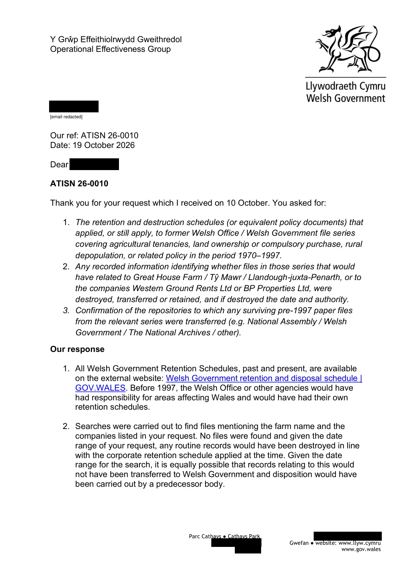

GHF-E106-R56-A1 partial
ATISN 26-0010 disclosure response: retention and destruction schedules; no files found under the farm name, Western Ground Rents Ltd or BP Properties Ltd

Transcript
Y Grŵp Effeithiolrwydd Gweithredol Operational Effectiveness Group Parc Cathays ● Cathays Park [address redacted] [email redacted] Gwefan ● website: www.llyw.cymru www.gov.wales Requester Our ref: ATISN 26-0010 Date: 19 October 2026 Dear Requester ATISN 26-0010 Thank you for your request which I received on 10 October. You asked for: 1. The retention and destruction schedules (or equivalent policy documents) that applied, or still apply, to former Welsh Office / Welsh Government file series covering agricultural tenancies, land ownership or compulsory purchase, rural depopulation, or related policy in the period 1970–1997. 2. Any recorded information identifying whether files in those series that would have related to Great House Farm / Tŷ Mawr / Llandough-juxta-Penarth, or to the companies Western Ground Rents Ltd or BP Properties Ltd, were destroyed, transferred or retained, and if destroyed the date and authority. 3. Confirmation of the repositories to which any surviving pre-1997 paper files from the relevant series were transferred (e.g. National Assembly / Welsh Government / The National Archives / other). Our response
Read more
1. All Welsh Government Retention Schedules, past and present, are available on the external website: Welsh Government retention and disposal schedule | GOV.WALES. Before 1997, the Welsh Office or other agencies would have had responsibility for areas affecting Wales and would have had their own retention schedules. 2. Searches were carried out to find files mentioning the farm name and the companies listed in your request. No files were found and given the date range of your request, any routine records would have been destroyed in line with the corporate retention schedule applied at the time. Given the date range for the search, it is equally possible that records relating to this would not have been transferred to Welsh Government and disposition would have been carried out by a predecessor body. [email redacted] 3. Material with historical significance from this period would have been identified using the Welsh Office’s Operational Selection Policy (available on TNA’s website: OSP 7 - Welsh Office 1979-1997). Historical material would then have been transferred by us to The National Archives (or a designated Place of Deposit) for permanent preservation at the appropriate time (this was after 30 years at that time, subsequently reduced to after 20 years for WG material from 2023 onwards). Records relating to Welsh Government property/deeds/leasing etc. are not transferred to TNA as they are not classed as “public records” like our business records are. These would be retained until the property is sold or lease agreements terminated. Next steps If you are dissatisfied with the Welsh Government’s handling of your request, you can ask for an internal review within 40 working days of the date of this response. Requests for an internal review should be addressed to the Welsh Government’s Freedom of Information Officer at: Information Rights Unit Welsh Government Cathays Park [address redacted] or e-mail: [email redacted] Please remember to quote the ATISN reference number above. You also have the right to complain to the Information Commissioner. The Information Commissioner can be contacted at: Information Commissioner’s Office Wycliffe House [address redacted] Wilmslow Cheshire [address redacted] Website: www.ico.org.uk However, please note that the Commissioner will not normally investigate a complaint until it has been through our own internal review process. Yours sincerely Emma Harvey-Woodason Departmental Records Officer Welsh Government
Artifact description
Provides a disclosure letter addressing retention schedules and searches, indicating some information may not be specifically recorded.
| Catalogue ID | GHF-E106-R56-A1 |
|---|---|
| What it is | PDF document from Welsh Government / Cadw. Attached to an email received on 19 October 2026, their reference ATISN 26-0010. 2 pages. |
| From | Welsh Government / Cadw |
| Email received | 19 October 2026 |
| Their reference | ATISN 26-0010 |
| Pages | 2 |
| File | ATISN 26-0010 - Disclosure.pdf (167 KB) |
| State | Read |
Our integration
Part of the FOI internal review thread with Welsh Government / Cadw opened 10 October 2026. The thread's standing classification is “partial”. Statutory time: met.
Concern to test: whether this reply answers the question as asked, or a narrower one. Not checked against the original request wording here.
Related: GHF-E106-R59-A1 — Welsh Government: ATISN 26-0010 internal review acknowledged · GHF-E106-R63-A1 — Welsh Government: ATISN 26-0010 acknowledgement · The covering email · What They Don’t Say: WTDS-d262c862-1, WTDS-d3b374e7-1, WTDS-d3b374e7-2 · EV-0497 in the evidence catalogue · Timeline · Disclosure Dartboard